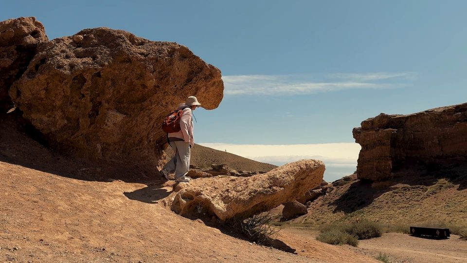
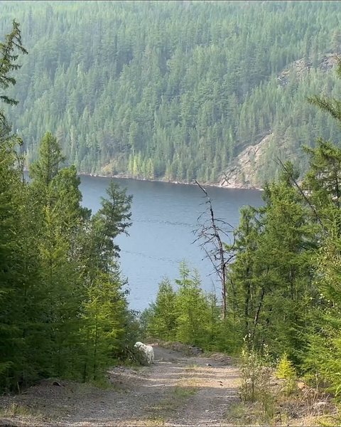

Видеограф · Алматы
Алиса Макаренко
Визуальные истории для брендов и пространств
Замечаю то, мимо чего обычно проходят, и снимаю так, чтобы вы почувствовали себя внутри момента. Для меня атмосфера важнее сложного монтажа.
Алматы, Казахстан
Шоурил
Коротко о том, как я вижу
Места для отдыха, предметы, природа и свет — в одном коротком ролике. Черновой монтаж из моей съёмки.

Направления
Что и для кого я снимаю
Три направления, для которых я снимаю. Примеры — из моей личной съёмки: я ищу первые съёмки для мест и брендов.
Hospitality & Tourism
Отдых и путешествия
В примерахСтеклянный купол в горах, кемпер в берёзовой роще, дом в дождь, горное озеро и каньон.


Для когоГлэмпинги, A-frame-домики, отели, загородные комплексы, базы отдыха и туристические места.
- Атмосферные видео домиков, интерьеров и вида вокруг
- Утро, вечер, погода и детали, ради которых едут за город
- Вертикальные ролики о месте для Reels и сторис
Lifestyle & Places
Лайфстайл и места
В примерахПока не кафе и не интерьеры, а то, что я принесу и туда: свет, фактуры, неспешный ритм. Книга у озера, лаванда, праздник у воды, зимний лес.


Для когоКафе, рестораны, кофейни, SPA, студии и другие красивые пространства.
- Интерьер и свет пространства
- Процесс и детали: посуда, руки, фактуры
- Короткие ролики о месте для соцсетей
Brands & Products
Бренды и предметы
В примерахПредметная съёмка, которую я сделала для себя и для шоу «Ведьмин час»: кожаный блокнот с подвесками и книги при свечах.

Для когоНебольшие бренды, магазины, производители косметики, предметов интерьера и других товаров.
- Крупные планы товара, фактуры, упаковка
- Товар в живой обстановке: дома, на природе, в руках
- Ролики в стиле UGC для соцсетей
Природа и животные
Горы, вода, снег, кошки и собаки — то, что я люблю снимать.


Подход
Как я снимаю

Замечаю то, мимо чего проходят
Как падает свет, на чём задерживается взгляд, что происходит между главными событиями. Мне важно поймать то, что другие могли бы просто не снять.
Детали крупно
Хвоя под снегом, кошачья шерсть на солнце, ткань, страницы книги. Мелочи, которые другие не стали бы снимать, лучше всего передают ощущение места.
Свет, который уже есть
Работаю с тем светом, что есть: дневным, пасмурным, вечерним, со свечами. Монтаж простой, чтобы главным оставался кадр.
От съёмки до цвета — сама
Снимаю на iPhone, монтирую в DaVinci Resolve и CapCut и сама делаю цветокоррекцию.
Из моих роликов
Кадры
Отдельные кадры из моих роликов, в моём цвете. Нажмите на кадр, чтобы открыть его крупно.


Форматы
Что вы получаете
Вертикальные ролики
Готовые ролики 9:16 для Reels, Shorts и TikTok.
Атмосферная съёмка места
Набор планов: общие виды, интерьер, детали и свет.
Предметная съёмка
Крупные планы товара и фактур — отдельно или в обстановке.
Готовый материал под ваши задачи
Сняла, обработала и передала — дальше вы используете материал так, как вам нужно.
UGC-ролики
Ролики от первого лица, как будто их снял гость или покупатель.
Процесс
Как проходит работа
- 01
Бриф
Обсуждаем место или продукт, задачу, настроение и где будут публиковать видео.
- 02
Съёмка
Снимаю на месте. Время выбираем под свет и под ритм места.
- 03
Монтаж и цвет
Отбираю лучшие кадры, монтирую и делаю цветокоррекцию под стиль места или бренда.
- 04
Передача
Передаю готовые ролики и, если нужно, исходники в форматах под ваши площадки.
Обо мне
Алиса, Алматы
Я живу и снимаю в Алматы. Больше всего люблю спокойные кадры: горы, воду, животных, предметы и тихие дни, в которых будто ничего не происходит. С декабря 2023 года я продюсер, сценарист и соведущая YouTube-шоу и подкаста «Ведьмин час» — у него 4,9 млн просмотров на YouTube с учётом Shorts. Там я делаю превью и Shorts, поэтому привыкла думать о том, как ролик смотрится в ленте.
- Открыта к
- Коммерческим съёмкам для брендов и пространств, UGC и контенту для SMM. Работаю в Алматы и рядом.
- Чем снимаю и монтирую
- iPhone · DaVinci Resolve · CapCut · Lightroom
Больше съёмки — в Instagram
Там повседневное: короткие ролики, фото и детали, которые не вошли сюда.


Контакты
Расскажите о вашем месте или продукте
Быстрее всего отвечаю в Telegram. Можно сразу прислать ссылку на место или бренд.
- Telegram@alissayeya
- Instagram@alissayeya
- Почтаalice.yeya@icloud.com
- Телефон+7 706 643 29 43
ГородАлматы, Казахстан